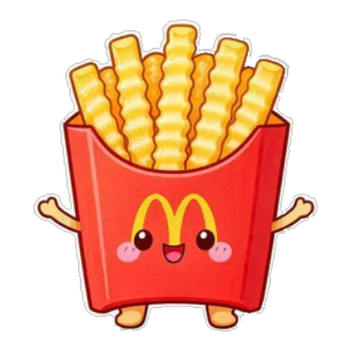
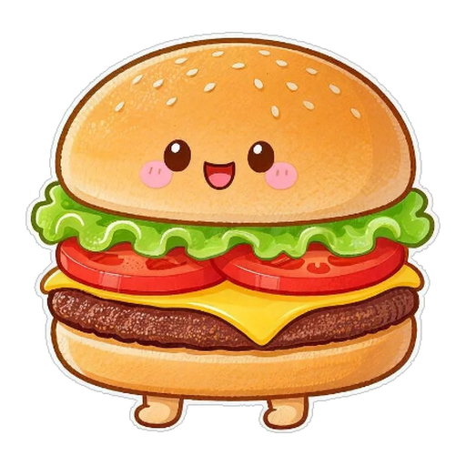
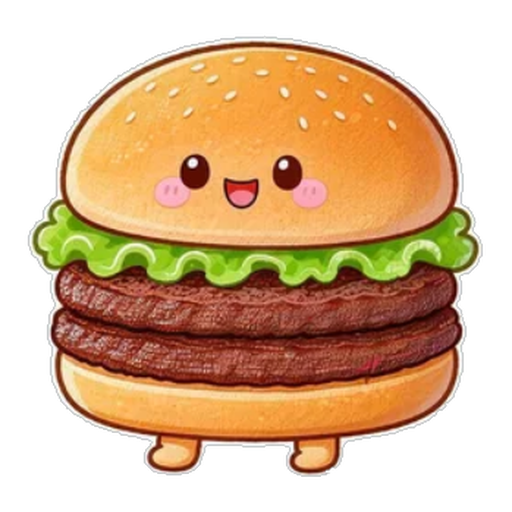
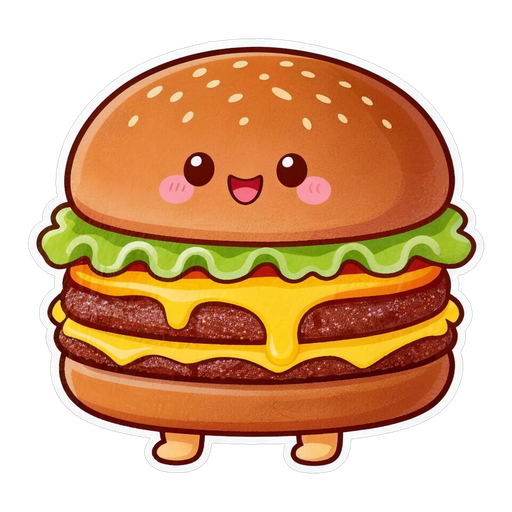
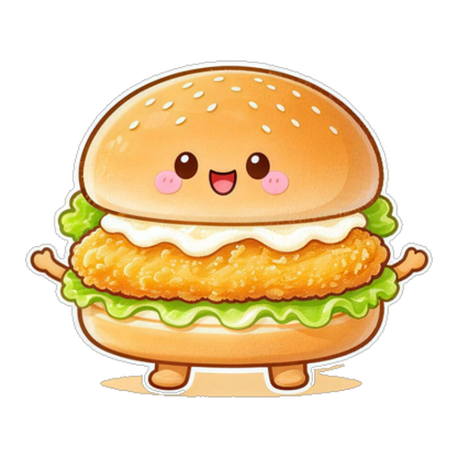
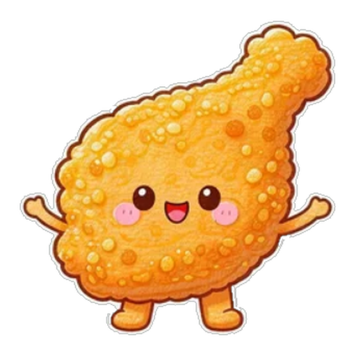
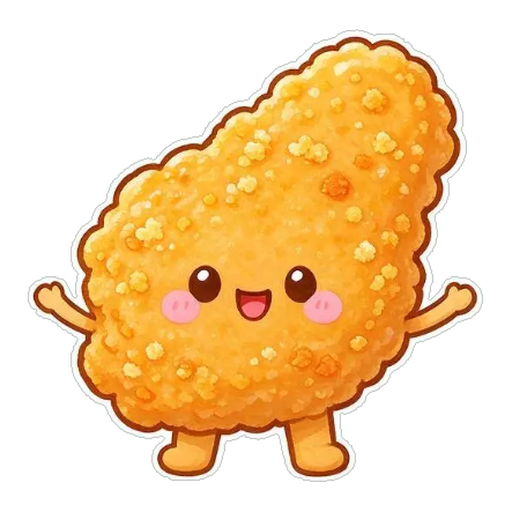
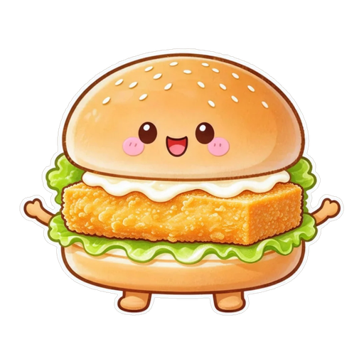
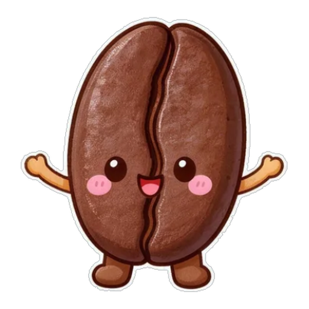
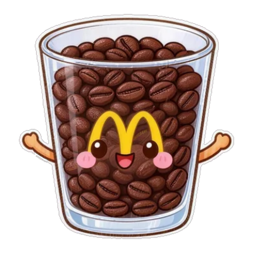

成形
金薯灵
形态素材由 picture/ 原创形象经 tools/prepare_spirits.py 抠图归一化（512² 透明 PNG），
按 data/forms.json 绑定到「系别 × 阶段」。
规则：喂什么变什么 —— 幼体期喂得最多的系别决定成形方向；本命系 ×1.5，异系 ×0.5 并累积变异能量。










网页版里这些形态会随你的真实订单成长实时切换，并配有立体舞台与 3D 手办柜：
运行 python app.py 体验。本页为实际素材渲染效果，非示意图。